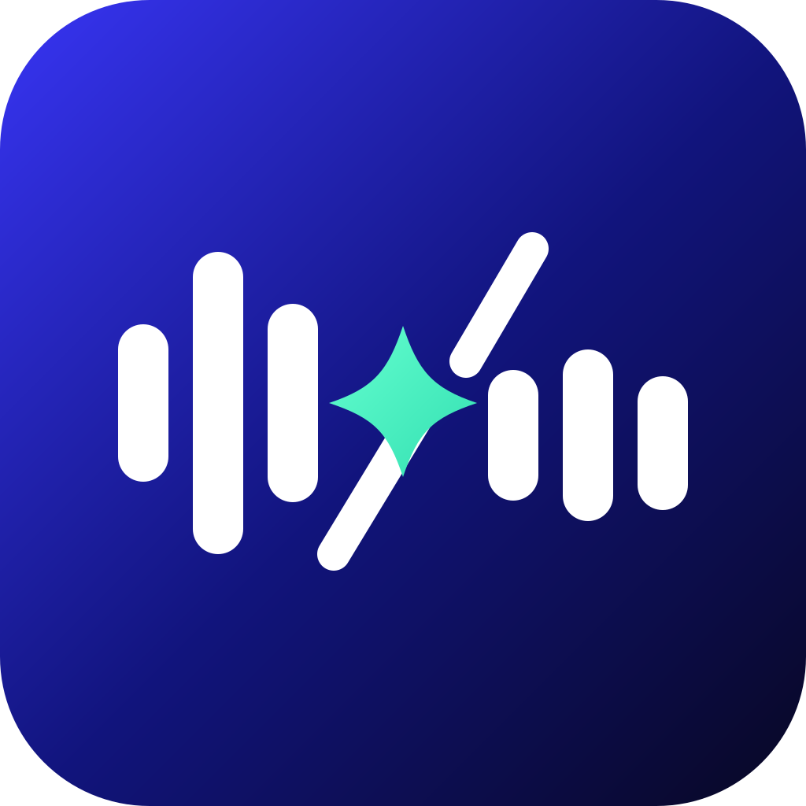

voCut
录音 + 剪辑，一个窗口搞定Record and cut in one window
从录音、降噪、转写到剪辑导出，一套流程处理播客素材。可按文字定位片段、复核重复语句建议，也能重录不满意的段落；每个删除决定都由你确认。 Take podcast audio from recording and denoising through transcription and editing. Find passages by text, review repeated-phrase suggestions, and rerecord sections you want to improve. You approve every cut.
macOSWindows自用中In daily use
仓库暂未公开Repository not yet public